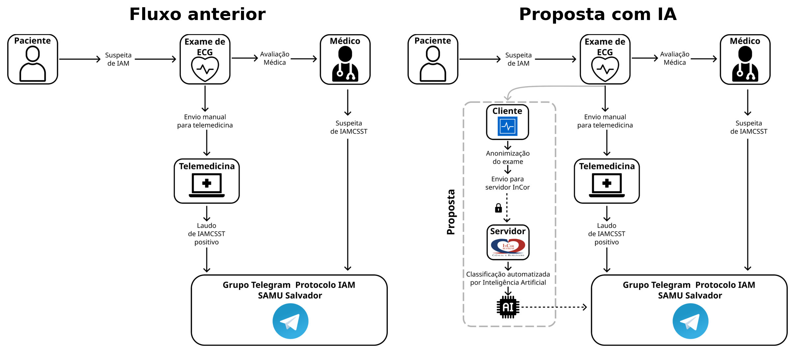
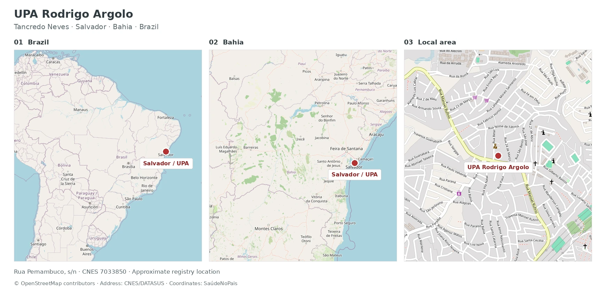
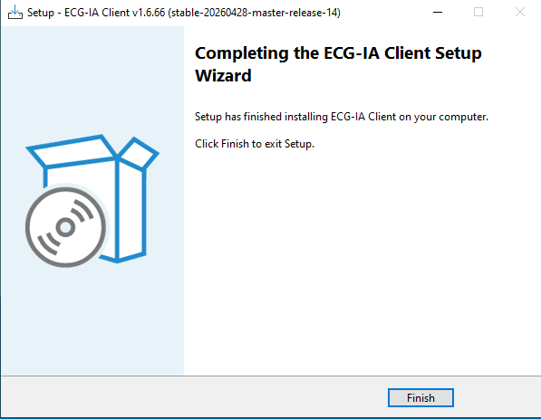
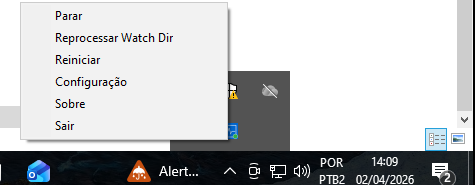
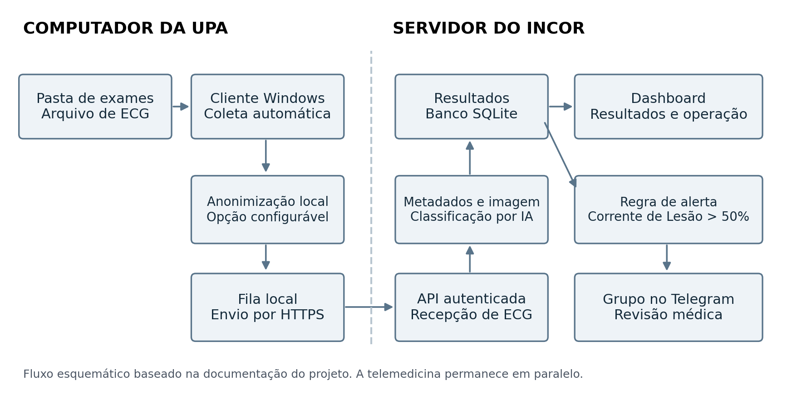
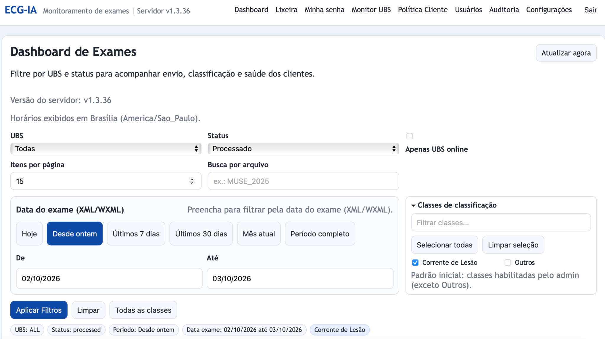
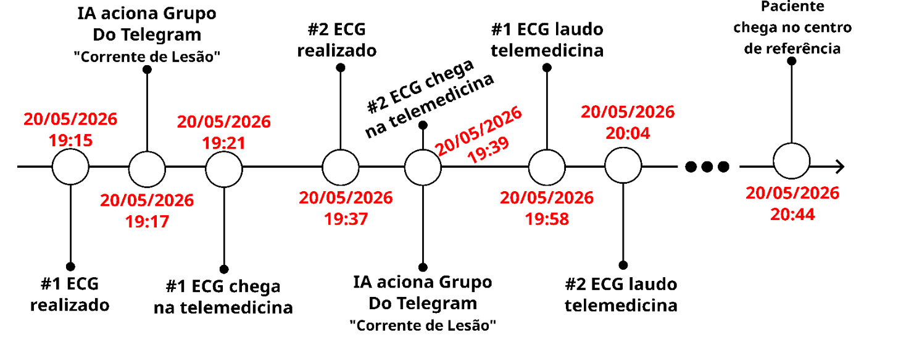

01 / Deployed AI · InCor · 2026
Gorgona
ECG classification integrated into urgent care
42,037 records processed across the platform, as queried on October 3, 2026.
Objective
Flag ECGs with suspected current of injury and notify the clinical coordination team earlier. Automated analysis runs alongside the telemedicine workflow. Patient assessment and care decisions remain with the medical team.
Project responsibility
I connected the classification model to the Windows client, InCor processing server, web dashboard and Telegram alerts. The clinical team managed the care protocol and reviewed the ECGs.
Engineering decisions
- Clinical workflow
- Automated analysis runs alongside telemedicine. Alerts add a communication route to the clinical coordination team, while assessment and care decisions remain with clinicians.
- Client and server
- The Windows client monitors the examination folder and queues uploads. Inference runs on the InCor server. Local controls allow staff to restart the client and reprocess files.
- Data and access
- Configurable local anonymization, HTTPS and per-installation credentials form the technical controls. These features do not replace an assessment of compliance with Brazil’s LGPD.

Dashboard query on October 3, 2026: all units, full period, Processed status, Current of Injury and Other classes. The count represents examination records, not unique patients.
Deployment location
The deployment presented here took place at UPA Rodrigo Argolo, an urgent care unit in Tancredo Neves, Salvador, Brazil. ECGs are acquired at the unit and the model runs remotely on the InCor server.

How it works
Previous workflow
ECGs were manually sent to telemedicine. The report and medical assessment informed whether to contact the coordination group on Telegram. The physician could also contact the group directly when clinical suspicion was high.
With Gorgona
We added an automated path. The client detects the file, prepares the upload and sends it to InCor for classification. When the probability of the Current of Injury class exceeds 50%, the system sends an alert to the configured group.
| Stage | Previous workflow | With Gorgona |
|---|---|---|
| Collection | Manual telemedicine submission | Automatic folder monitoring |
| Analysis | Medical review and report | Additional AI classification |
| Communication | Staff-initiated contact | Automated Telegram alert |
| Decision | Medical and coordination teams | Medical and coordination teams |
Windows client, server and online platform
The application at the unit
The ECG-IA Client monitors an examination folder on Windows and queues new files for upload. Each installation has its own credential. A system tray menu provides configuration, restart and folder reprocessing controls.


Server and online platform
A FastAPI endpoint receives the examination, extracts metadata and converts the tracing into an image when needed. Classes and probabilities are stored in SQLite. The dashboard supports result queries and client monitoring, while the Telegram integration delivers alerts.

Data protection and LGPD
The proposed workflow includes anonymization on the unit’s computer before transmission. This feature is configurable in the client. HTTPS, per-installation authentication and access roles complement local file processing. These are technical data protection measures, not a formal assessment of full compliance with Brazil’s LGPD.
The online platform supports filtering by unit, period, status and class. This screenshot shows the Current of Injury query for October 2–3, 2026, which differs from the query used for the 42,037-record count.

Results and evaluation
Case study
On May 20, 2026, one encounter at UPA Rodrigo Argolo provided a complete record of the alert workflow. Admission was at 18:52. Both ECGs triggered automated alerts 2 minutes after acquisition. Arrival at the referral center was recorded at 20:44.

| Event | First ECG | Second ECG |
|---|---|---|
| ECG acquisition | 19:15 | 19:37 |
| AI alert | 19:17 | 19:39 |
| Arrival at telemedicine | 19:21 | 19:39 |
| Report issued | 19:58 | 20:04 |
| ECG to alert | 2 min | 2 min |
| Lead time before report | 41 min | 25 min |
The first alert arrived 4 minutes before the ECG reached telemedicine. Alerts preceded the corresponding reports by 41 and 25 minutes. The case demonstrates earlier information delivery to the coordination team. It does not establish a causal reduction in treatment time or improved clinical outcomes.
Scientific basis
The AIMED model that won the classification task of the 2024 George B. Moody PhysioNet Challenge served as the foundation for developing the classifier used in Gorgona. The Computing in Cardiology (CinC) 2024 paper describes the ConvNeXt approach, ECG image pretraining and model ensemble. My doctoral thesis documents the image datasets, training strategies and clinical evaluation behind this research.
The emergency model uses a ConvNeXt ensemble for 12 categories. The study includes 18,519 ECGs from 14,402 patients, annotated by 19 cardiologists. Held-out macro F1 was 0.807 (95% CI: 0.788–0.825). These figures describe the classifier study, separately from operational processing volume.
Research references
- Dias FM, Ribeiro E, Soares QB, Krieger JE, Gutierrez MA. Image-Based Electrocardiogram Classification Using Pre-trained ConvNext. Computing in Cardiology, 2024.
- Dias FM. Classificação automatizada de imagens de eletrocardiogramas por aprendizado profundo. Universidade de São Paulo · Tese de doutorado, 2025.
- Dias FM et al. Image-based deep learning for emergency electrocardiogram classification. medRxiv · Preprint, 2026.
- Dias FM et al. Artificial Intelligence-Driven Screening System for Rapid Image-Based Classification of 12-Lead ECG Exams: A Promising Solution for Emergency Room Prioritization. IEEE Access, 2023.